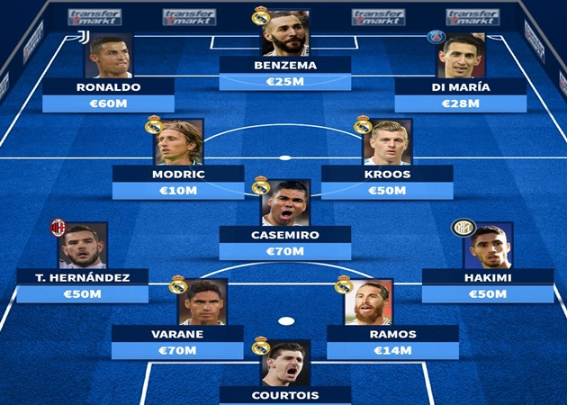

Một vài giai đoạn / đội hình tiêu biểu:
- Thập kỷ 1950–1960: thời kỳ đầu thành công với các huyền thoại như Di Stéfano, Puskás, Gento… — giai đoạn Real Madrid giành liên tiếp European Cups đầu tiên.
- Những “Galácticos” hiện đại: trong nhiều thập kỷ qua, Real thường bảo trợ chiêu mộ các siêu sao toàn cầu để tạo nên đội hình “sao khủng” — giúp CLB giữ được tính cạnh tranh ở đẳng cấp cao.
- Giai đoạn hiện tại (2020s): Với đội hình trẻ + ngôi sao + đầu tư mạnh về chất lượng, Real Madrid vẫn được xem là một trong những CLB mạnh nhất châu Âu. Sự pha trộn giữa kinh nghiệm và sức trẻ giúp họ duy trì ổn định. (Như thông qua việc định giá đội hình cao, chuẩn bị tham dự các giải lớn 2025.)
